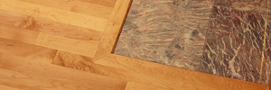
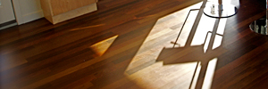
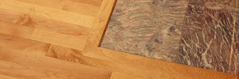
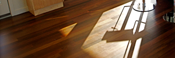

At Blue Canoe we offer a variety of hardwood flooring services such as refinishing and installation, servicing Minneapolis & St. Paul area, we have a reputation of high quality and excellent customer service. We are a dependable and reliable hardwood flooring team, providing hardwood floor refinishing, hardwood floor installation, and other hardwood flooring services. We provide our customers with the highest quality hardwoods and use newer technologies to offer a much higher level of dust containment. More services listed below images.
 


